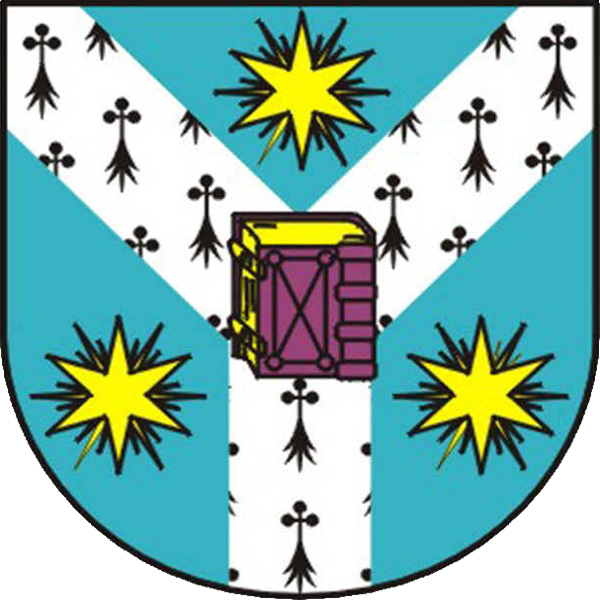
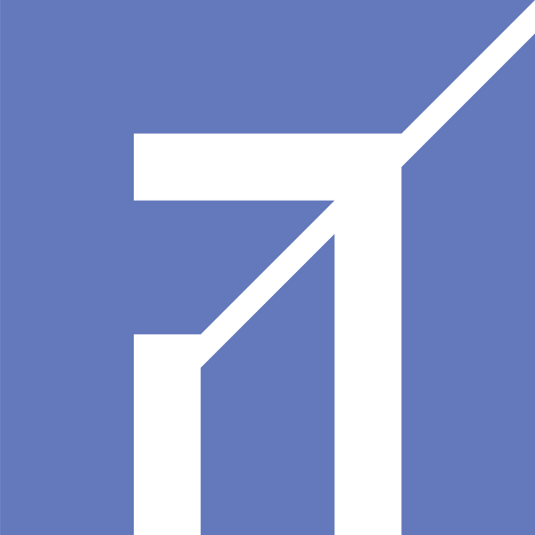

Multilatex
collaborative web editor for LaTeX
Paul Nechifor
Coordinatoor:
conf. dr. Sabin-Corneliu Buraga
FII
2 July 2014
Home • Blog • Projects • Twitter
Overview
- LaTeX
- problems
- requirements
- design
- implementation
- features
LaTeX
- a document preparation language based on the TeX typesetting language
- separates content from presentation
- widespread in academia
Power of plain text
- universally editable
- easy to version control
- a language is more expressive than editing visual representations
- easy abstractions
Problems
- non-interactive compilation
- may require multiple compilations
- large package base
When TeX was created, TTYs were still in common use.
How would it be reimagined?
Requirements
- collaborative
- no installations (web-based)
- safe (auto-saving)
- track versions
Started the design on the blog.
Stack
- no proprietary technology
using own stack
- remove dependency on others
- best way to learn
$ gulp && gulp dev-deploy && gulp dev-log
$ gulp --production && gulp dev-deploy && gulp dev-log
Vagrant.configure("2") do |config|
config.vm.box = "hashicorp/precise64"
(1..nMachines).each do |i|
vmname = "machine"
config.vm.define vmname.to_sym do |machine|
machine.vm.host_name = vmname
machine.vm.network "private_network", ip: "10.10.10.#{10+i}"
machine.vm.provider "virtualbox" do |v|
v.name = vmname
v.memory = 1024
v.cpus = 2
end
machine.vm.provision "shell", path: "scripts/provision.sh"
end
end
if File.file?('../private/client_id')
vmname = "machine-do"
config.vm.define vmname.to_sym do |machine|
machine.vm.host_name = vmname
machine.vm.provision "shell", path: "scripts/provision.sh"
config.vm.provider :digital_ocean do |provider, override|
override.ssh.private_key_path = '~/.ssh/id_rsa'
override.vm.box = 'digital_ocean'
override.vm.box_url = 'https://github.com/smdahlen/vagrant-digitalocean/raw/master/box/digital_ocean.box'
provider.client_id = File.read('../private/client_id').strip
provider.api_key = File.read('../private/api_key').strip
provider.size = '1GB'
provider.image = 'Ubuntu 12.04.4 x64'
provider.region = 'Amsterdam 2'
end
end
end
end
vagrant plugin install vagrant-digitalocean
vagrant up --provider=digital_ocean
Back-end
| Node.js | Upstart |
| TeX Live | MongoDB |
| Express | Ubuntu |
| Share.js |
Transformation
Higher level languages for JS+HTML+CSS.
| Browserify |
| CoffeeScript |
| Jade |
| Stylus |
Front-end
Installed with Bower.
| Ace |
| PDF.js |
| jQuery |
| Backbone.js |
| Bootstrap |
Editor
- Share.js for document collaboration.
- Own WebSocket protocol for all other communication.